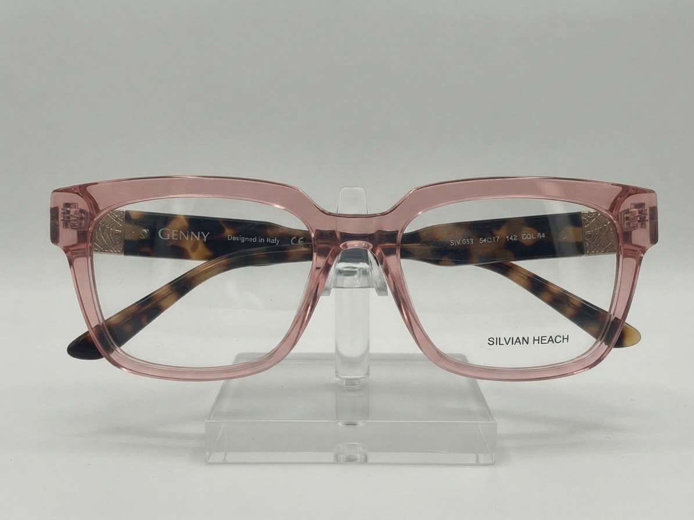

Gli occhiali Silvian Heach in negozio
Alcuni dei modelli che trovi da EmiFotoOttica a Roma



Glamour urbano dal cuore mediterraneo
Silvian Heach nasce nel 2002 in provincia di Napoli come marchio di moda donna e cresce fino a diventare un nome riconosciuto del fashion italiano, capace di unire energia urbana e gusto mediterraneo. Il DNA del brand si fonda su determinazione, identità forte e uno stile accessibile ma mai banale. Questa filosofia si ritrova nella linea eyewear, con montature dal carattere deciso — spesso in acetato, tra forme rettangolari e cat-eye — pensate per chi porta gli occhiali come un vero accessorio di stile.
Silvian Heach nasce nel 2002 in provincia di Napoli come marchio di moda donna e cresce fino a diventare un nome riconosciuto del fashion italiano, capace di unire energia urbana e gusto mediterraneo. Il DNA del brand si fonda su determinazione, identità forte e uno stile accessibile ma mai banale. Questa filosofia si ritrova nella linea eyewear, con montature dal carattere deciso — spesso in acetato, tra forme rettangolari e cat-eye — pensate per chi porta gli occhiali come un vero accessorio di stile.
| Brand | Silvian Heach |
| Paese d'origine | Italia |
| Anno fondazione | 2002 |
| Modelli disponibili | 4 modelli |
| Tipologia | Da vista e da sole |
| Dove acquistarli | EmiFotoOttica, Via F. Merlini 23/25 Roma |
Il modello
Forme femminili e decise, colori di tendenza e un'anima mediterranea per tutti i giorni.
Dentro la montatura
Finiture lucide, dettagli metallici e colori studiati: un accessorio che completa il look.
Perché sceglierlo
Scopri i vantaggi di ogni componente: lenti, montatura e aste.
Dettaglio
—
Alcuni dei modelli che trovi da EmiFotoOttica a Roma

Vieni in negozio da EmiFotoOttica in Via Francesco Merlini 23/25 a Roma. Il nostro personale ti aiuterà a trovare il modello perfetto per la tua forma del viso, il tuo stile e le tue esigenze visive.
Puoi anche provarli virtualmente dal sito — vai alla pagina Occhiali e attiva la prova virtuale!
Dove acquistarli
EmiFotoOttica propone 16 marchi selezionati per tutti i gusti
Vedi tutti i brand →